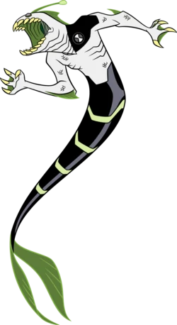

Poderes
| La principal habilidad de Acuático es respirar bajo el agua y nadar a altas velocidades con una agilidad asombrosa. Tiene una gran resistencia y puede soportar una fuerte presión de agua, lo que significa que posee la naturaleza de la vida acuática abisal, de ahí sus ojos en blanco y la luz del rape en su frente.
Acuático muestra la característica distintiva de convertir sus piernas en la cola de un pez y viceversa, dándole una apariencia de tritón. Mientras está fuera del entorno acuático, muestra un taparrabos con un patrón similar a su cola (lo que implica que el taparrabos se envuelve alrededor de sus piernas, fusionándose con él y convirtiéndose en la cola). Mientras que sus piernas tienen la forma de una cola, Acuático puede nadar muy bien a grandes velocidades, y formar vórtices de agua producto de su velocidad. |
| Apariencia |
 |
| A los 10 años, la mayor debilidad de Acuático era su incapacidad para permanecer fuera del agua durante demasiado tiempo, lo que requería que evitara la deshidratación. Sin embargo, ha comenzado a depender menos del agua a medida que envejece, ya que no tuvo problemas para sobrevivir fuera del agua a los 16 años.
La exposición al calor extremo hará que Acuático se deshidrate rápidamente.
Acuático es vulnerable a la electricidad. |
Debilidades |